Press Sketch
Dior Héritage Collection, Paris
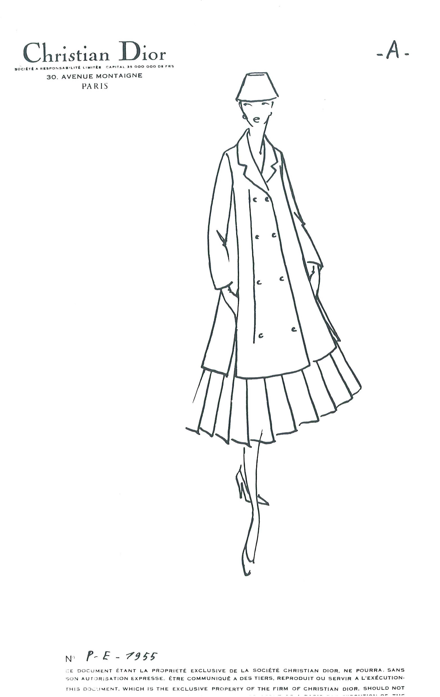


Chart
Each chart recorded the designs in a collection by type, who made it, for whom, and with textile swatches. This ensured the ateliers’ work was evenly distributed and that the mannequins had time to change during daily presentations.
Dior Héritage Collection, Paris
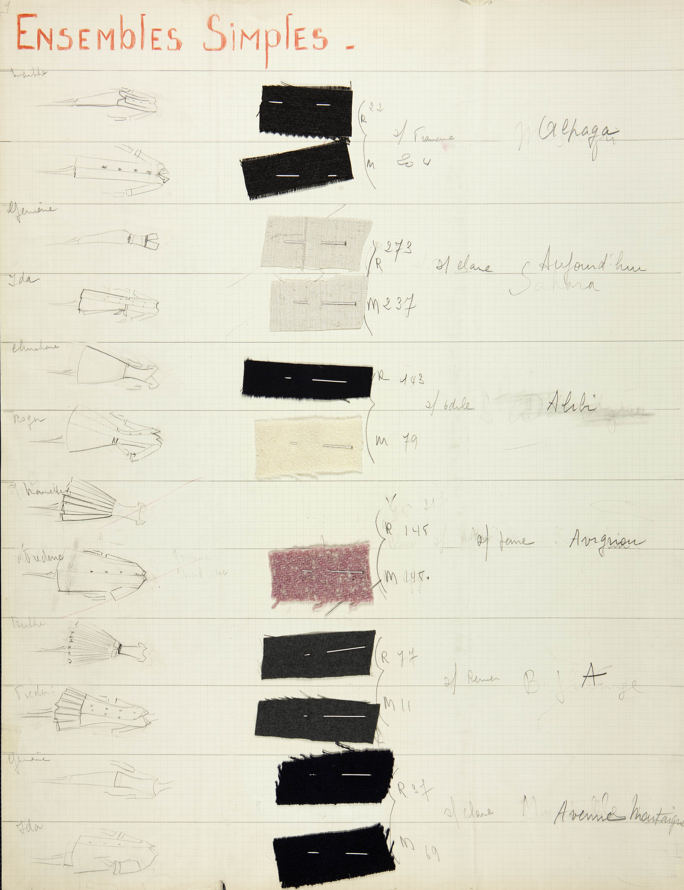
L’Officiel de la couture, March 1955
© Les Éditions Jalou « L’Officiel 1955 »
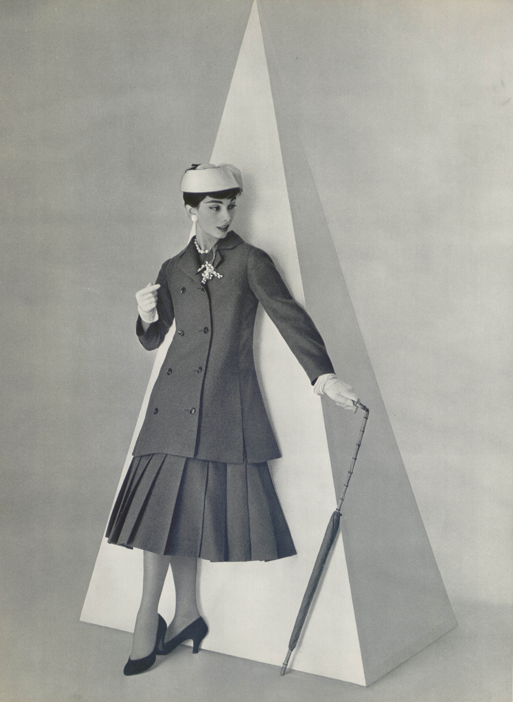
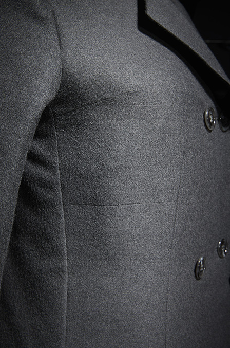
*
Above: Darts at the bust emphasize the A line.
* Photos Laziz Hamani
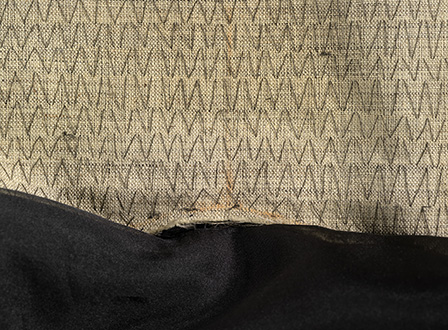
Below: The handwritten tape records the order by American manufacturer, Ben Zuckerman.
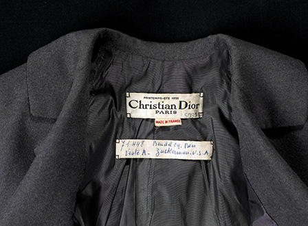
Left: Hand-stitched tailor’s canvas under the collar gives structure.
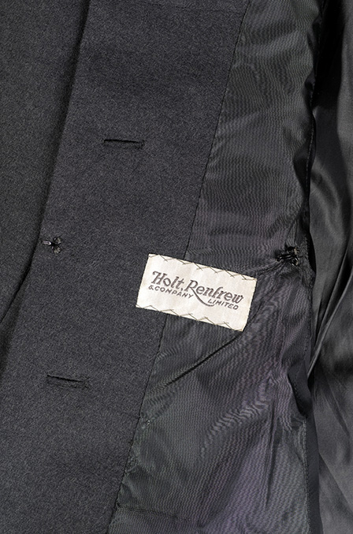


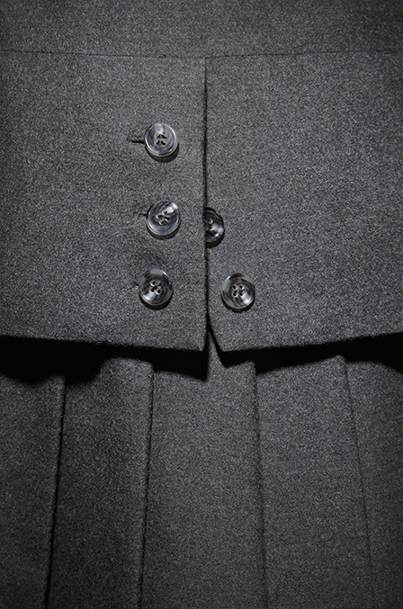
*
Right: Two-piece day dress
Centre top: A handmade loop with snap fastener keeps the bra strap in place.
* Photos Laziz Hamani
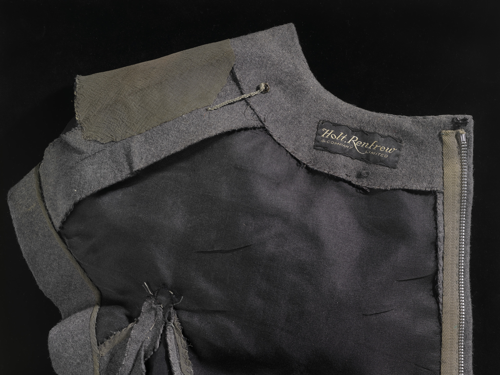
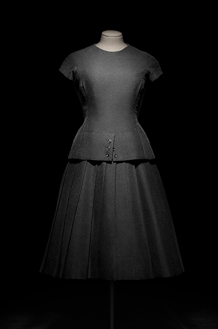
*
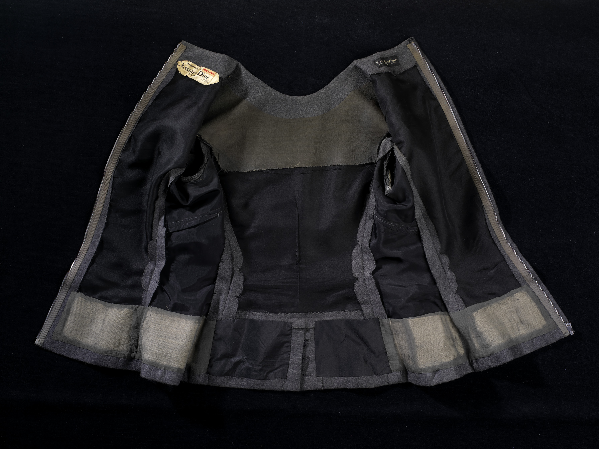
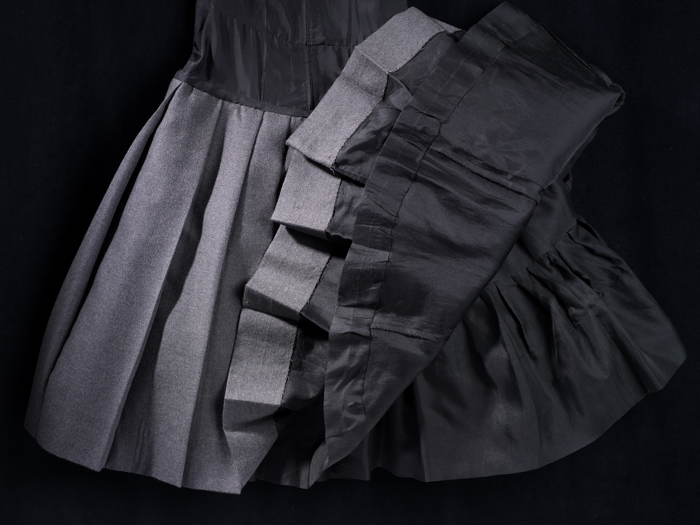
Above: The pleated skirt, with attached petticoat, is sewn to a complete silk lining worn under the bodice.
Top: Dress bodice with silk and organdy linings and tailor’s canvas for shaping.